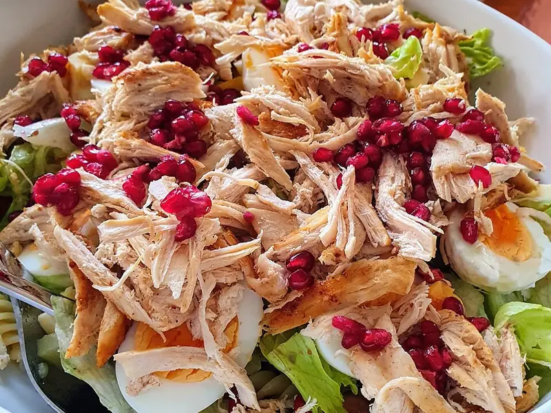

Фото: T. Bjornstad, CC BY-SA 4.0

Салат из курицы из супа
Простой сытный салат из отварной курицы, яиц, огурца и зелёного лука
25 мин3 порц.369 ккал на порциюБ 31 · Ж 26 · У 3Русская кухня
Продукты на 3 порц.
- Курица готовая (осталась)300 г
- Яйцо куриное2 шт
- Огурцы1 шт
- Кукуруза консервированная по желанию0,5 банка
- Зелёный лук0,5 пучок
- Майонез2 ст. л.
- Сметана 20%2 ст. л.
- Соль1 щеп.
- Перец чёрный молотыйпо вкусу
Как готовить
- Яйца опустите в кипящую воду и варите 10 минут, затем остудите в холодной воде 5 минут и очистите.
- Курицу отделите от кожи и костей и разберите на волокна или нарежьте кубиком.
- Огурец и яйца нарежьте кубиком, зелёный лук мелко порубите. С кукурузы слейте жидкость.
- Смешайте майонез со сметаной, солью и перцем.
- Соедините все продукты с заправкой и перемешайте. Подавайте сразу или через 15 минут в холодильнике.
Совет. Курица из бульона бывает пресной: посолите её отдельно и дайте постоять 5 минут перед заправкой. Огурец добавляйте прямо перед подачей, иначе салат даст сок.